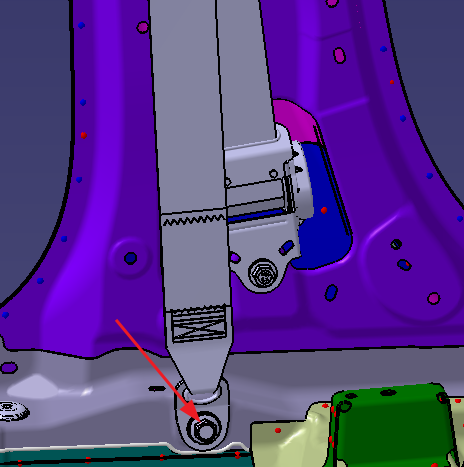
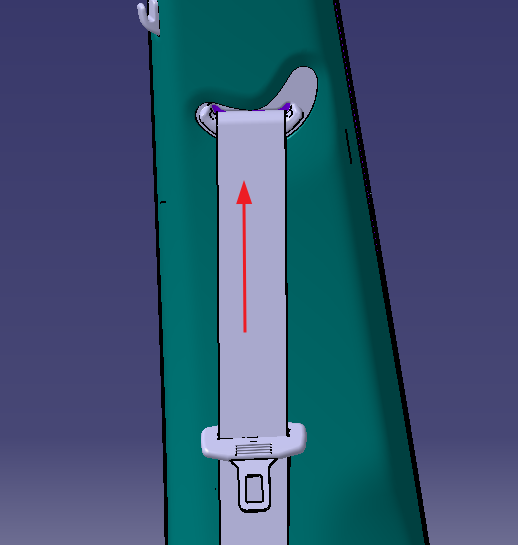
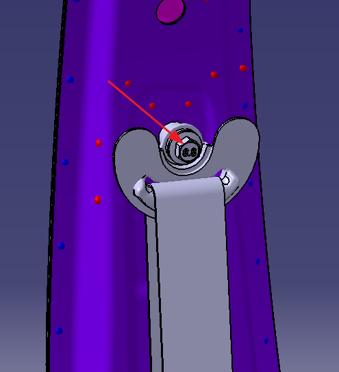
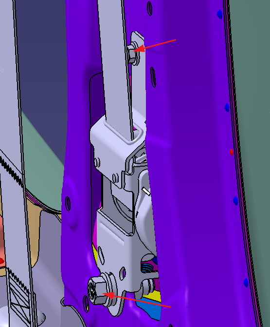

Снятие
Выключить питание автомобиля
Снять нижнюю облицовочную панель стойки B
С помощью трещоточного ключа и инструмента с торцевой головкой № 14 выкрутить болт нижней точки крепления ремня безопасности, момент затяжки: 45 N.m.

Снять верхнюю облицовочную панель стойки B, извлечь ленту из верхней облицовочной панели стойки B.
См. главу Снятие и установка облицовочной панели стойки B

С помощью трещоточного ключа и инструмента с торцевой головкой № 14 выкрутить направляющее кольцо ремня безопасности, момент затяжки: 45 N.m.

Снять инерционную катушку ремня безопасности
С помощью трещоточного ключа и инструмента с торцевой головкой № 10 выкрутить болт ① крепления верхней соединительной пластины инерционной катушки ремня безопасности, момент затяжки: 10 N.m.
С помощью трещоточного ключа и инструмента с торцевой головкой № 14 выкрутить нижний крепежный болт ② инерционной катушки ремня безопасности, момент затяжки: 45 N.m.

Установка
Установка выполняется в порядке, обратном снятию.